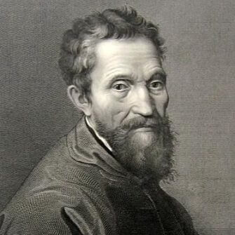

Michelangelo Buonarroti was born in the small italian village of Caprese. He was raised in Florence, where his early life was marked by his mother's death when he was six years old. His father sent him to live with a stonecutter's family, sparking his early exposure to the craft. Growing up in the politically vibrant atmosphere of Florence, Michelangelo became deeply influenced by the Medici family, who acted as his patrons and introduced him to prominent intellectual and artistic circles. He was known for his intense focus, solitary nature, and deep religious devotion, which often shaped his interactions and decisions. Michelangelo never married or had children, dedicating his life entirely to his craft and maintaining a frugal and humble lifestyle despite his immense fame.
